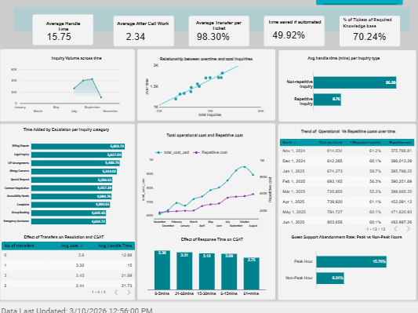

GrandStay Hospitality operates a global portfolio of hotels and resorts, handling thousands of guest support requests related to bookings, check-in logistics, amenities, and service inquiries. As customer demand grows, managing guest support efficiently has become critical for maintaining service quality and operational efficiency.
Despite a dedicated support operation, GrandStay faced challenges in understanding how inquiry volumes, response times, and operational workflows were affecting service performance. High ticket volumes, repetitive requests, and inconsistent response times were placing pressure on service teams and increasing operational costs.
This project develops an analytics platform that transforms raw service-desk data into operational intelligence. Using Looker Studio dashboards and a Streamlit application, the solution analyzes guest support demand, service performance, and operational bottlenecks to identify opportunities for automation, improve response times, and enhance overall guest satisfaction.
GrandStay Hospitality manages a high-volume guest support operation handling over 120,000 service tickets across multiple hotel locations and service teams. The analytics dashboard reveals significant operational pressure driven by growing inquiry volumes and complex service workflows.
Analysis shows an average first response time of 10.04 minutes, while the SLA breach rate reaches 71.79%, indicating that service teams frequently struggle to respond within expected time thresholds. Although the overall resolution rate stands at 67.82%, many requests require transfers or escalations before resolution.
Operational analysis also highlights that 60.11% of tickets are repetitive inquiries, suggesting strong opportunities to reduce service workload through knowledge-base optimization and automation.
By identifying demand patterns, service bottlenecks, and operational cost drivers, this analytics platform enables GrandStay to make data-driven decisions to improve support efficiency, reduce response times, and enhance guest satisfaction.
Guest support demand shows clear temporal patterns, with ticket volumes increasing during daytime hours when guest activity is highest. The inquiry volume trend highlights steady demand growth over the observed period, peaking in October.
Analysis of inquiry categories shows that operational questions such as late checkout, breakfast timing, gym hours, cancellations, and check-in logistics represent the majority of guest support requests. These recurring questions represent a significant portion of the service workload and contribute heavily to operational demand.
The average first response time across service teams is 10.04 minutes, although response times fluctuate significantly throughout the day depending on inquiry volume.
Regional performance comparisons show variations in response times across service teams, suggesting differences in staffing levels, workload distribution, or operational processes. While most teams maintain comparable response times, some regions experience higher SLA breach rates, indicating opportunities for operational improvement.
Operational inefficiencies become more apparent when analyzing handling workflows. The average inquiry handle time is 15.75 minutes, and many requests require transfers or escalations before reaching resolution.
Peak-hour demand places additional pressure on service teams. Guest support abandonment increases significantly during these periods, with abandonment rates reaching 15.76% during peak hours compared to 6.24% during non-peak periods. This indicates that response delays during high demand periods can lead to guests leaving support queues before receiving assistance.
Response time analysis demonstrates a clear relationship between support responsiveness and guest satisfaction. Requests handled within shorter time windows are associated with higher customer satisfaction scores, while longer response times correspond with lower satisfaction levels.
This relationship highlights the importance of improving response efficiency, particularly during peak demand periods when delays are most likely to occur.
The Streamlit application includes an AI assistant that allows operations managers to query support performance insights using natural language. Sample questions that can be asked are:
Action: Deploy automated responses or self-service solutions for high-frequency requests such as check-in procedures, Wi-Fi access, parking information, and hotel amenities.
Action: Adjust staffing allocation during peak support hours when inquiry volumes are highest.
Action: Improve internal support documentation and knowledge-base workflows to enable faster ticket resolution.
Collectively, these improvements could reduce operational workload by approximately 25–35% while improving guest response times and overall service satisfaction.
The GrandStay Hospitality analytics platform provides a comprehensive view of guest support demand, service performance, and operational efficiency. By consolidating service-desk data into interactive dashboards, the platform enables stakeholders to identify operational bottlenecks and make data-driven decisions to improve service delivery.
Reducing repetitive inquiries through automation, optimizing staffing during peak demand periods, and improving internal knowledge resources can significantly enhance response efficiency while reducing operational costs. These insights position GrandStay Hospitality to deliver faster, more consistent guest support experiences while maintaining operational scalability.